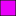

<!doctype html>
<html lang="en">
    <head>
        <meta charset="utf-8">
        <meta http-equiv="X-UA-Compatible" content="IE=edge">
        <meta name="viewport" content="initial-scale=1,user-scalable=no,maximum-scale=1,width=device-width">
        <meta name="mobile-web-app-capable" content="yes">
        <meta name="apple-mobile-web-app-capable" content="yes">
        <link rel="stylesheet" href="css/leaflet.css">
        <link rel="stylesheet" href="css/L.Control.Layers.Tree.css">
        <link rel="stylesheet" href="css/qgis2web.css">
        <link rel="stylesheet" href="css/fontawesome-all.min.css">
        <style>
        html, body, #map {
            width: 100%;
            height: 100%;
            padding: 0;
            margin: 0;
        }
        </style>
        <title></title>
    </head>
    <body>
        <div id="map">
        </div>
        <script src="js/qgis2web_expressions.js"></script>
        <script src="js/leaflet.js"></script>
        <script src="js/L.Control.Layers.Tree.min.js"></script>
        <script src="js/leaflet-svg-shape-markers.min.js"></script>
        <script src="js/leaflet.rotatedMarker.js"></script>
        <script src="js/leaflet.pattern.js"></script>
        <script src="js/leaflet-hash.js"></script>
        <script src="js/Autolinker.min.js"></script>
        <script src="js/rbush.min.js"></script>
        <script src="js/labelgun.min.js"></script>
        <script src="js/labels.js"></script>
        <script src="data/reprojectmanyar_1.js"></script>
        <script src="data/reprojectjalanmanyar_2.js"></script>
        <script src="data/ServiceareaKesehatan1500lines_3.js"></script>
        <script src="data/Buffered_4.js"></script>
        <script src="data/SaranaKesehatan_5.js"></script>
        <script>
        var map = L.map('map', {
            zoomControl:false, maxZoom:28, minZoom:1
        }).fitBounds([[-7.164574248954411,112.5119128032148],[-7.029924786614513,112.7269227581892]]);
        var hash = new L.Hash(map);
        map.attributionControl.setPrefix('<a href="https://github.com/tomchadwin/qgis2web" target="_blank">qgis2web</a> &middot; <a href="https://leafletjs.com" title="A JS library for interactive maps">Leaflet</a> &middot; <a href="https://qgis.org">QGIS</a>');
        var autolinker = new Autolinker({truncate: {length: 30, location: 'smart'}});
        // remove popup's row if "visible-with-data"
        function removeEmptyRowsFromPopupContent(content, feature) {
         var tempDiv = document.createElement('div');
         tempDiv.innerHTML = content;
         var rows = tempDiv.querySelectorAll('tr');
         for (var i = 0; i < rows.length; i++) {
             var td = rows[i].querySelector('td.visible-with-data');
             var key = td ? td.id : '';
             if (td && td.classList.contains('visible-with-data') && feature.properties[key] == null) {
                 rows[i].parentNode.removeChild(rows[i]);
             }
         }
         return tempDiv.innerHTML;
        }
        // add class to format popup if it contains media
		function addClassToPopupIfMedia(content, popup) {
			var tempDiv = document.createElement('div');
			tempDiv.innerHTML = content;
			if (tempDiv.querySelector('td img')) {
				popup._contentNode.classList.add('media');
					// Delay to force the redraw
					setTimeout(function() {
						popup.update();
					}, 10);
			} else {
				popup._contentNode.classList.remove('media');
			}
		}
        var zoomControl = L.control.zoom({
            position: 'topleft'
        }).addTo(map);
        var bounds_group = new L.featureGroup([]);
        function setBounds() {
        }
        map.createPane('pane_Positron_0');
        map.getPane('pane_Positron_0').style.zIndex = 400;
        var layer_Positron_0 = L.tileLayer('https://a.basemaps.cartocdn.com/light_all/{z}/{x}/{y}.png', {
            pane: 'pane_Positron_0',
            opacity: 1.0,
            attribution: '<a href="https://cartodb.com/basemaps/">Map tiles by CartoDB, under CC BY 3.0. Data by OpenStreetMap, under ODbL.</a>',
            minZoom: 1,
            maxZoom: 28,
            minNativeZoom: 0,
            maxNativeZoom: 20
        });
        layer_Positron_0;
        map.addLayer(layer_Positron_0);
        function pop_reprojectmanyar_1(feature, layer) {
            var popupContent = '<table>\
                    <tr>\
                        <td colspan="2">' + (feature.properties['OBJECTID'] !== null ? autolinker.link(feature.properties['OBJECTID'].toLocaleString()) : '') + '</td>\
                    </tr>\
                    <tr>\
                        <td colspan="2">' + (feature.properties['WADMKC'] !== null ? autolinker.link(feature.properties['WADMKC'].toLocaleString()) : '') + '</td>\
                    </tr>\
                    <tr>\
                        <td colspan="2">' + (feature.properties['Shape_Leng'] !== null ? autolinker.link(feature.properties['Shape_Leng'].toLocaleString()) : '') + '</td>\
                    </tr>\
                    <tr>\
                        <td colspan="2">' + (feature.properties['Shape_Area'] !== null ? autolinker.link(feature.properties['Shape_Area'].toLocaleString()) : '') + '</td>\
                    </tr>\
                </table>';
            var content = removeEmptyRowsFromPopupContent(popupContent, feature);
			layer.on('popupopen', function(e) {
				addClassToPopupIfMedia(content, e.popup);
			});
			layer.bindPopup(content, { maxHeight: 400 });
        }

        function style_reprojectmanyar_1_0() {
            return {
                pane: 'pane_reprojectmanyar_1',
                opacity: 1,
                color: 'rgba(35,35,35,1.0)',
                dashArray: '',
                lineCap: 'butt',
                lineJoin: 'miter',
                weight: 1.0, 
                fill: true,
                fillOpacity: 1,
                fillColor: 'rgba(152,151,148,1.0)',
                interactive: true,
            }
        }
        map.createPane('pane_reprojectmanyar_1');
        map.getPane('pane_reprojectmanyar_1').style.zIndex = 401;
        map.getPane('pane_reprojectmanyar_1').style['mix-blend-mode'] = 'normal';
        var layer_reprojectmanyar_1 = new L.geoJson(json_reprojectmanyar_1, {
            attribution: '',
            interactive: true,
            dataVar: 'json_reprojectmanyar_1',
            layerName: 'layer_reprojectmanyar_1',
            pane: 'pane_reprojectmanyar_1',
            onEachFeature: pop_reprojectmanyar_1,
            style: style_reprojectmanyar_1_0,
        });
        bounds_group.addLayer(layer_reprojectmanyar_1);
        map.addLayer(layer_reprojectmanyar_1);
        function pop_reprojectjalanmanyar_2(feature, layer) {
            var popupContent = '<table>\
                    <tr>\
                        <td colspan="2">' + (feature.properties['OBJECTID'] !== null ? autolinker.link(feature.properties['OBJECTID'].toLocaleString()) : '') + '</td>\
                    </tr>\
                    <tr>\
                        <td colspan="2">' + (feature.properties['REMARK'] !== null ? autolinker.link(feature.properties['REMARK'].toLocaleString()) : '') + '</td>\
                    </tr>\
                    <tr>\
                        <td colspan="2">' + (feature.properties['Shape_Leng'] !== null ? autolinker.link(feature.properties['Shape_Leng'].toLocaleString()) : '') + '</td>\
                    </tr>\
                </table>';
            var content = removeEmptyRowsFromPopupContent(popupContent, feature);
			layer.on('popupopen', function(e) {
				addClassToPopupIfMedia(content, e.popup);
			});
			layer.bindPopup(content, { maxHeight: 400 });
        }

        function style_reprojectjalanmanyar_2_0() {
            return {
                pane: 'pane_reprojectjalanmanyar_2',
                opacity: 1,
                color: 'rgba(213,180,60,1.0)',
                dashArray: '',
                lineCap: 'square',
                lineJoin: 'bevel',
                weight: 1.0,
                fillOpacity: 0,
                interactive: true,
            }
        }
        map.createPane('pane_reprojectjalanmanyar_2');
        map.getPane('pane_reprojectjalanmanyar_2').style.zIndex = 402;
        map.getPane('pane_reprojectjalanmanyar_2').style['mix-blend-mode'] = 'normal';
        var layer_reprojectjalanmanyar_2 = new L.geoJson(json_reprojectjalanmanyar_2, {
            attribution: '',
            interactive: true,
            dataVar: 'json_reprojectjalanmanyar_2',
            layerName: 'layer_reprojectjalanmanyar_2',
            pane: 'pane_reprojectjalanmanyar_2',
            onEachFeature: pop_reprojectjalanmanyar_2,
            style: style_reprojectjalanmanyar_2_0,
        });
        bounds_group.addLayer(layer_reprojectjalanmanyar_2);
        map.addLayer(layer_reprojectjalanmanyar_2);
        function pop_ServiceareaKesehatan1500lines_3(feature, layer) {
            var popupContent = '<table>\
                    <tr>\
                        <td colspan="2">' + (feature.properties['NAMOBJ'] !== null ? autolinker.link(feature.properties['NAMOBJ'].toLocaleString()) : '') + '</td>\
                    </tr>\
                    <tr>\
                        <td colspan="2">' + (feature.properties['LUAS'] !== null ? autolinker.link(feature.properties['LUAS'].toLocaleString()) : '') + '</td>\
                    </tr>\
                    <tr>\
                        <td colspan="2">' + (feature.properties['REMARK'] !== null ? autolinker.link(feature.properties['REMARK'].toLocaleString()) : '') + '</td>\
                    </tr>\
                    <tr>\
                        <td colspan="2">' + (feature.properties['TIPSHT'] !== null ? autolinker.link(feature.properties['TIPSHT'].toLocaleString()) : '') + '</td>\
                    </tr>\
                    <tr>\
                        <td colspan="2">' + (feature.properties['FCODE'] !== null ? autolinker.link(feature.properties['FCODE'].toLocaleString()) : '') + '</td>\
                    </tr>\
                    <tr>\
                        <td colspan="2">' + (feature.properties['SRS_ID'] !== null ? autolinker.link(feature.properties['SRS_ID'].toLocaleString()) : '') + '</td>\
                    </tr>\
                    <tr>\
                        <td colspan="2">' + (feature.properties['LCODE'] !== null ? autolinker.link(feature.properties['LCODE'].toLocaleString()) : '') + '</td>\
                    </tr>\
                    <tr>\
                        <td colspan="2">' + (feature.properties['METADATA'] !== null ? autolinker.link(feature.properties['METADATA'].toLocaleString()) : '') + '</td>\
                    </tr>\
                    <tr>\
                        <td colspan="2">' + (feature.properties['FSKADD'] !== null ? autolinker.link(feature.properties['FSKADD'].toLocaleString()) : '') + '</td>\
                    </tr>\
                    <tr>\
                        <td colspan="2">' + (feature.properties['type'] !== null ? autolinker.link(feature.properties['type'].toLocaleString()) : '') + '</td>\
                    </tr>\
                    <tr>\
                        <td colspan="2">' + (feature.properties['start'] !== null ? autolinker.link(feature.properties['start'].toLocaleString()) : '') + '</td>\
                    </tr>\
                </table>';
            var content = removeEmptyRowsFromPopupContent(popupContent, feature);
			layer.on('popupopen', function(e) {
				addClassToPopupIfMedia(content, e.popup);
			});
			layer.bindPopup(content, { maxHeight: 400 });
        }

        function style_ServiceareaKesehatan1500lines_3_0() {
            return {
                pane: 'pane_ServiceareaKesehatan1500lines_3',
                opacity: 1,
                color: 'rgba(141,90,153,1.0)',
                dashArray: '',
                lineCap: 'square',
                lineJoin: 'bevel',
                weight: 1.0,
                fillOpacity: 0,
                interactive: true,
            }
        }
        map.createPane('pane_ServiceareaKesehatan1500lines_3');
        map.getPane('pane_ServiceareaKesehatan1500lines_3').style.zIndex = 403;
        map.getPane('pane_ServiceareaKesehatan1500lines_3').style['mix-blend-mode'] = 'normal';
        var layer_ServiceareaKesehatan1500lines_3 = new L.geoJson(json_ServiceareaKesehatan1500lines_3, {
            attribution: '',
            interactive: true,
            dataVar: 'json_ServiceareaKesehatan1500lines_3',
            layerName: 'layer_ServiceareaKesehatan1500lines_3',
            pane: 'pane_ServiceareaKesehatan1500lines_3',
            onEachFeature: pop_ServiceareaKesehatan1500lines_3,
            style: style_ServiceareaKesehatan1500lines_3_0,
        });
        bounds_group.addLayer(layer_ServiceareaKesehatan1500lines_3);
        map.addLayer(layer_ServiceareaKesehatan1500lines_3);
        function pop_Buffered_4(feature, layer) {
            var popupContent = '<table>\
                    <tr>\
                        <th scope="row">NAMOBJ</th>\
                        <td class="visible-with-data" id="NAMOBJ">' + (feature.properties['NAMOBJ'] !== null ? autolinker.link(feature.properties['NAMOBJ'].toLocaleString()) : '') + '</td>\
                    </tr>\
                    <tr>\
                        <td colspan="2">' + (feature.properties['LUAS'] !== null ? autolinker.link(feature.properties['LUAS'].toLocaleString()) : '') + '</td>\
                    </tr>\
                    <tr>\
                        <td colspan="2">' + (feature.properties['REMARK'] !== null ? autolinker.link(feature.properties['REMARK'].toLocaleString()) : '') + '</td>\
                    </tr>\
                    <tr>\
                        <td colspan="2">' + (feature.properties['TIPSHT'] !== null ? autolinker.link(feature.properties['TIPSHT'].toLocaleString()) : '') + '</td>\
                    </tr>\
                    <tr>\
                        <td colspan="2">' + (feature.properties['FCODE'] !== null ? autolinker.link(feature.properties['FCODE'].toLocaleString()) : '') + '</td>\
                    </tr>\
                    <tr>\
                        <td colspan="2">' + (feature.properties['SRS_ID'] !== null ? autolinker.link(feature.properties['SRS_ID'].toLocaleString()) : '') + '</td>\
                    </tr>\
                    <tr>\
                        <td colspan="2">' + (feature.properties['LCODE'] !== null ? autolinker.link(feature.properties['LCODE'].toLocaleString()) : '') + '</td>\
                    </tr>\
                    <tr>\
                        <td colspan="2">' + (feature.properties['METADATA'] !== null ? autolinker.link(feature.properties['METADATA'].toLocaleString()) : '') + '</td>\
                    </tr>\
                    <tr>\
                        <td colspan="2">' + (feature.properties['FSKADD'] !== null ? autolinker.link(feature.properties['FSKADD'].toLocaleString()) : '') + '</td>\
                    </tr>\
                    <tr>\
                        <td colspan="2">' + (feature.properties['type'] !== null ? autolinker.link(feature.properties['type'].toLocaleString()) : '') + '</td>\
                    </tr>\
                    <tr>\
                        <td colspan="2">' + (feature.properties['start'] !== null ? autolinker.link(feature.properties['start'].toLocaleString()) : '') + '</td>\
                    </tr>\
                </table>';
            var content = removeEmptyRowsFromPopupContent(popupContent, feature);
			layer.on('popupopen', function(e) {
				addClassToPopupIfMedia(content, e.popup);
			});
			layer.bindPopup(content, { maxHeight: 400 });
        }

        function style_Buffered_4_0() {
            return {
                pane: 'pane_Buffered_4',
                opacity: 1,
                color: 'rgba(35,35,35,1.0)',
                dashArray: '',
                lineCap: 'butt',
                lineJoin: 'miter',
                weight: 1.0, 
                fill: true,
                fillOpacity: 1,
                fillColor: 'rgba(233,0,250,1.0)',
                interactive: true,
            }
        }
        map.createPane('pane_Buffered_4');
        map.getPane('pane_Buffered_4').style.zIndex = 404;
        map.getPane('pane_Buffered_4').style['mix-blend-mode'] = 'normal';
        var layer_Buffered_4 = new L.geoJson(json_Buffered_4, {
            attribution: '',
            interactive: true,
            dataVar: 'json_Buffered_4',
            layerName: 'layer_Buffered_4',
            pane: 'pane_Buffered_4',
            onEachFeature: pop_Buffered_4,
            style: style_Buffered_4_0,
        });
        bounds_group.addLayer(layer_Buffered_4);
        map.addLayer(layer_Buffered_4);
        function pop_SaranaKesehatan_5(feature, layer) {
            var popupContent = '<table>\
                    <tr>\
                        <th scope="row">NAMOBJ</th>\
                        <td class="visible-with-data" id="NAMOBJ">' + (feature.properties['NAMOBJ'] !== null ? autolinker.link(feature.properties['NAMOBJ'].toLocaleString()) : '') + '</td>\
                    </tr>\
                    <tr>\
                        <th scope="row">LUAS</th>\
                        <td class="visible-with-data" id="LUAS">' + (feature.properties['LUAS'] !== null ? autolinker.link(feature.properties['LUAS'].toLocaleString()) : '') + '</td>\
                    </tr>\
                    <tr>\
                        <th scope="row">REMARK</th>\
                        <td class="visible-with-data" id="REMARK">' + (feature.properties['REMARK'] !== null ? autolinker.link(feature.properties['REMARK'].toLocaleString()) : '') + '</td>\
                    </tr>\
                    <tr>\
                        <th scope="row">foto</th>\
                        <td class="visible-with-data" id="foto">' + (feature.properties['foto'] !== null ? '' : '') + '</td>\
                    </tr>\
                </table>';
            var content = removeEmptyRowsFromPopupContent(popupContent, feature);
			layer.on('popupopen', function(e) {
				addClassToPopupIfMedia(content, e.popup);
			});
			layer.bindPopup(content, { maxHeight: 400 });
        }

        function style_SaranaKesehatan_5_0() {
            return {
                pane: 'pane_SaranaKesehatan_5',
                radius: 8.400000000000004,
                opacity: 1,
                color: 'rgba(35,35,35,1.0)',
                dashArray: '',
                lineCap: 'butt',
                lineJoin: 'miter',
                weight: 1,
                fill: true,
                fillOpacity: 1,
                fillColor: 'rgba(255,42,23,1.0)',
                interactive: true,
            }
        }
        map.createPane('pane_SaranaKesehatan_5');
        map.getPane('pane_SaranaKesehatan_5').style.zIndex = 405;
        map.getPane('pane_SaranaKesehatan_5').style['mix-blend-mode'] = 'normal';
        var layer_SaranaKesehatan_5 = new L.geoJson(json_SaranaKesehatan_5, {
            attribution: '',
            interactive: true,
            dataVar: 'json_SaranaKesehatan_5',
            layerName: 'layer_SaranaKesehatan_5',
            pane: 'pane_SaranaKesehatan_5',
            onEachFeature: pop_SaranaKesehatan_5,
            pointToLayer: function (feature, latlng) {
                var context = {
                    feature: feature,
                    variables: {}
                };
                return L.shapeMarker(latlng, style_SaranaKesehatan_5_0(feature));
            },
        });
        bounds_group.addLayer(layer_SaranaKesehatan_5);
        map.addLayer(layer_SaranaKesehatan_5);
        var baseMaps = {};
        var overlaysTree = [
            {label: ' Sarana Kesehatan ', layer: layer_SaranaKesehatan_5},
            {label: ' Buffered', layer: layer_Buffered_4},
            {label: ' Service area Kesehatan 1500(lines)', layer: layer_ServiceareaKesehatan1500lines_3},
            {label: ' reproject jalan manyar', layer: layer_reprojectjalanmanyar_2},
            {label: ' reproject manyar', layer: layer_reprojectmanyar_1},
            {label: "Positron", layer: layer_Positron_0},]
        var lay = L.control.layers.tree(null, overlaysTree,{
            //namedToggle: true,
            //selectorBack: false,
            //closedSymbol: '&#8862; &#x1f5c0;',
            //openedSymbol: '&#8863; &#x1f5c1;',
            //collapseAll: 'Collapse all',
            //expandAll: 'Expand all',
            collapsed: true,
        });
        lay.addTo(map);
        setBounds();
        </script>
    </body>
</html>
